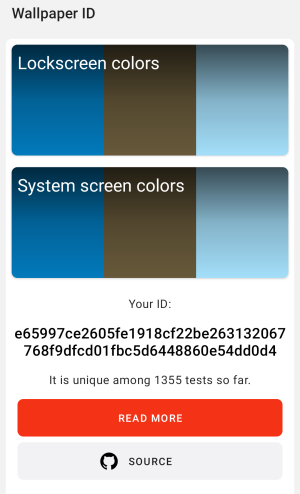

Android wallpaper fingerprints
Uniquely identifying users so that they can be tracked as they go about their business on the internet is, sadly, a major goal for advertisers and others today. Web browser cookies provide a fairly well-known avenue for tracking users as they traverse various web sites, but mobile apps are not browsers, so that mechanism is not available. As it turns out, though, there are ways to "fingerprint" Android devices—and likely those of other mobile platforms—so that the device owners can be tracked as they hop between their apps.
While cookies provide an easy mechanism to assign a unique ID to a particular browser instance, there are ways around being tracked that way. Since cookies are stored locally, they can be deleted or the browser can restrict how they can be used. Beyond that, users can instruct their browsers to reject cookies. Because of that, at least in part, browser fingerprinting came about.
Browser fingerprinting originally used JavaScript to query various characteristics of the browser environment (e.g. display size, plugins and fonts installed, localization settings) and combined that with information like the User-Agent string sent by the browser to derive an ID that was often unique to the user. As browser makers tried to reduce the amount and diversity of information revealed, tracking companies evolved newer techniques (e.g. canvas fingerprinting). The Panopticlick tool from the Electronic Frontier Foundation (EFF) helped demonstrate fingerprinting and the organization now has the Cover Your Tracks tool that shows how well the browser is protecting against fingerprinting.
In the mobile space, many of the same fingerprinting techniques work within the browsers, but these days users often use apps to access content, rather than a browser. Apps can simply directly send whatever information they deem necessary to do their job; they do not have to rely on users to store and preserve cookies. But Android apps do not have access to JavaScript and the browser environment directly, and the Android API is somewhat restrictive on what kinds of information about the environment apps can get. They also cannot directly share an ID with each other on the phone. So other techniques are needed.

In a recent blog post, Alexey Verkhovsky at FingerprintJS detailed one way to fingerprint devices using information extracted from wallpaper images on Android phones. Up until Android 8.1 (released in December 2017), apps could simply access the wallpaper images directly, but Google tightened the ability to use the getDrawable() call, by requiring the READ_EXTERNAL_STORAGE permission, in that release. At the same time, though, a new getWallpaperColors() call was added to allow apps to get the three main colors used by the wallpaper images for the home or lock screens without requiring any special permissions. Android 12, released in October 2021, will use that information to theme the phone user interface.
The post looks at how those color values can be combined into a device fingerprint that will only change when the user, presumably infrequently, changes their wallpaper. There is a demonstration app on the Google Play store; a screen shot from running it on my phone is shown at right. It notes that my color combinations are unique in a small sample size, but my wallpaper also changes daily, so the tracking value of the ID generated would seem to be fairly low—and the same as others using the Android-provided "seascape" wallpaper.
The post suggests using default wallpapers and not changing them as mitigations for the information leak. Custom wallpapers or those of personal photos will make the phone more identifiable. Frequently changing wallpapers automatically would seem to help thwart the stability of the ID, as well. Though running through the same set of personal photos, for example, would add another level of identifiability if that were deemed important by an app author.
FingerprintJS is a company focused on device fingerprints for fraud prevention in banking, commerce, gaming, and so on. Much of its code is available on GitHub, including the source for the wallpaper ID app and a general library for Android fingerprinting. There are other mechanisms for device identification, as an earlier blog post covers, but some of those either have been removed or may disappear over time. In addition, those identifiers may not be stable or can be spoofed, which makes them less than ideal for fraud prevention. But, of course, IDs that can be used to detect unauthorized transactions can also be used for other things—user tracking, for example.
The library has a "playground" app that can be installed to further investigate the kinds of information that can be gleaned from a phone. The variety and amount of information available is truly eye-opening, including such things as installed apps and localization choices—all of which are available to an app without giving it any extra permissions.
While the instability of wallpaper fingerprints may make them unsuitable for most use cases, the ability for any app to gain access to the data shows something of an unintended consequence of providing information for theming. As the earlier blog post notes, other properties of the device can be combined to create IDs that are likely to be unique and are stable, possibly over the entire lifetime of a device. As Android ratchets down access to some of that kind of information, which seems inevitable, Google probably will not remove all of it, for reasons the wallpaper blog post makes clear:
Google has not restricted these for a number of years now, and it is unlikely that it ever will. At the end of the day, doing so would impact Android's efficacy as an advertising platform — and for the world's largest tech firm, it's a constant juggle between balancing these interests with protecting user privacy.
It is no surprise that unique IDs are desired for more than just the browser. Fraud prevention is certainly a laudable goal, for example. But being able to peer inside users' activities is rather less laudable, though it is even more desirable for entities ranging from advertisers to criminals to governments (and all of the shades of gray in between). It all adds up to more evidence, if any was truly needed, that our phones are privacy nightmares, which is something that we are probably never going to escape—at least in the standard mobile operating systems.
| Index entries for this article | |
|---|---|
| Security | Android |
| Security | Anonymity |
Posted Oct 27, 2021 5:45 UTC (Wed)
by felixfix (subscriber, #242)
[Link] (5 responses)
Posted Oct 27, 2021 7:50 UTC (Wed)
by wsy (subscriber, #121706)
[Link] (3 responses)
Posted Oct 27, 2021 9:14 UTC (Wed)
by lkundrak (subscriber, #43452)
[Link] (2 responses)
Posted Oct 27, 2021 9:22 UTC (Wed)
by bojan (subscriber, #14302)
[Link] (1 responses)
Posted Oct 27, 2021 15:12 UTC (Wed)
by felixfix (subscriber, #242)
[Link]
Posted Oct 28, 2021 6:55 UTC (Thu)
by cpitrat (subscriber, #116459)
[Link]
Posted Oct 27, 2021 9:12 UTC (Wed)
by developer122 (guest, #152928)
[Link]
Suppose I have Alice_app and Bob_app, and they want to know if they've been installed on the same phone together. They could look at the three theme colors and both realize that they're on default wallpaper A, of system provided wallpapers A, B, C, and D. Now, maybe lots of people use wallpaper A, so that's not a great hint.
However, suppose that they both take a series of measurements, timestamped with the system time? If they both see the same sequence of transitions from A to C to B to D to A to D to C, then there's a much higher probability that they're both on the same phone, as it's unlikely two different phones would pick the same randomly generated sequence. Here we're able to record changes tot he environment over time and match them. Unless the OS was programmed to pick backgrounds at scheduled time in a predetermined order, I think is is a potentially powerful (if not immediate) fingerprinting technique.
Who says you need to match users together immediately? You could fold the histories of matching pones together after you determine a match, then continue to merge them going forward.
Posted Oct 28, 2021 13:55 UTC (Thu)
by syrjala (subscriber, #47399)
[Link] (6 responses)
Posted Oct 28, 2021 14:11 UTC (Thu)
by immibis (guest, #105511)
[Link] (5 responses)
Posted Oct 28, 2021 15:31 UTC (Thu)
by dskoll (subscriber, #1630)
[Link] (4 responses)
Why would most apps need to take screenshots of themselves?
Posted Oct 28, 2021 15:47 UTC (Thu)
by immibis (guest, #105511)
[Link]
IIRC Android apps work by sending screenfuls of pixels to the compositor process. How will you stop them seeing what they're sending?
Posted Oct 28, 2021 23:38 UTC (Thu)
by derobert (subscriber, #89569)
[Link] (2 responses)
Posted Oct 30, 2021 8:59 UTC (Sat)
by mkbosmans (subscriber, #65556)
[Link] (1 responses)
Posted Oct 30, 2021 9:15 UTC (Sat)
by derobert (subscriber, #89569)
[Link]
Posted Oct 30, 2021 18:53 UTC (Sat)
by giraffedata (guest, #1954)
[Link] (2 responses)
Posted Oct 31, 2021 16:05 UTC (Sun)
by ttuttle (subscriber, #51118)
[Link]
Posted Nov 1, 2021 10:42 UTC (Mon)
by rschroev (subscriber, #4164)
[Link]
In short, probably most of the apps on most people's phones.
Posted Nov 13, 2021 10:58 UTC (Sat)
by sammythesnake (guest, #17693)
[Link] (1 responses)
I want to be able to run an app that insists on all sorts of permissions that I'd rather not give it. There are many that could be given more restricted access to sensitive data or fake data rather simply.
Back in the day, CyanogenMod did some of this stuff, but it went under before getting to the point I thought they were heading for :-(
Local file storage should be (by default) restricted to one directory used only by that one app and the file manager
Requests for location data could easily always return some fixed value, ideally with the indicated accuracy set to a low value
Apps that insist on being a device administrator could be told they are without their changes to system settings changing anything other than what they're told the system settings are
Information about wi-fi/mobile networks etc. could be configured to always give the correct lie configured for each app
Demands to be always active or start on boot-up can be ignored
All sorts of fingerprinting relevant stuff like wallpapers, installed apps, localisation, etc. could be faked to an extremely bland default (just the Google default Google config)
While we're at it, an advert blocking proxy would be nice, though probably somewhat more subtle to implement, many apps will simply fail to work if they don't get their adverts to serve and faking them might be both fiddly and app specific...
Posted Dec 2, 2021 23:17 UTC (Thu)
by mcortese (guest, #52099)
[Link]
Android wallpaper fingerprints
Android wallpaper fingerprints
Android wallpaper fingerprints
Android wallpaper fingerprints
Android wallpaper fingerprints
Android wallpaper fingerprints
Android wallpaper fingerprints
Android wallpaper fingerprints
Android wallpaper fingerprints
Android wallpaper fingerprints
Android wallpaper fingerprints
Android wallpaper fingerprints
Android wallpaper fingerprints
Android wallpaper fingerprints
I don't get it. What kind of mobile apps are we talking about? The ones I'm thinking of (that access a server) have my email address. What more identity could they want?
Android wallpaper fingerprints
Android wallpaper fingerprints
Android wallpaper fingerprints
Android Apps As Adversaries
An ad-blocking proxy does exist. Look for Blokada on f-droid.
Android Apps As Adversaries